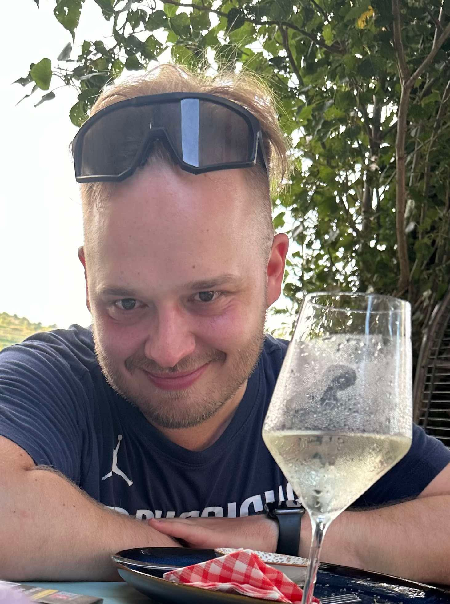
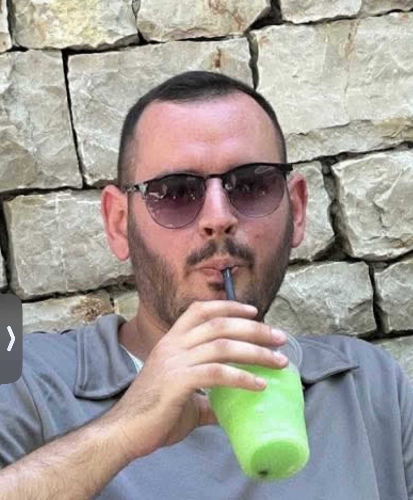
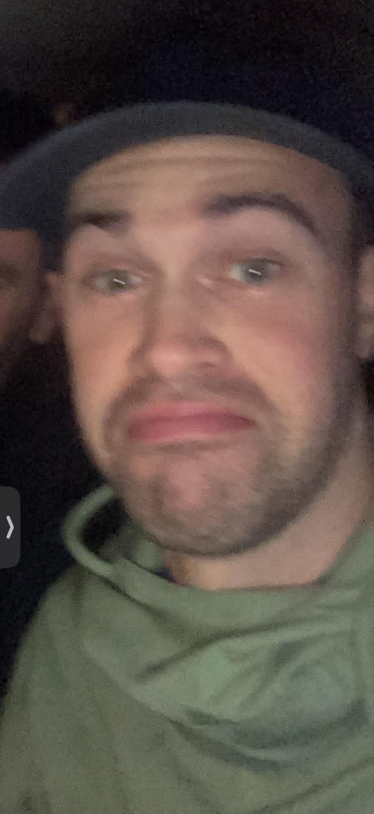
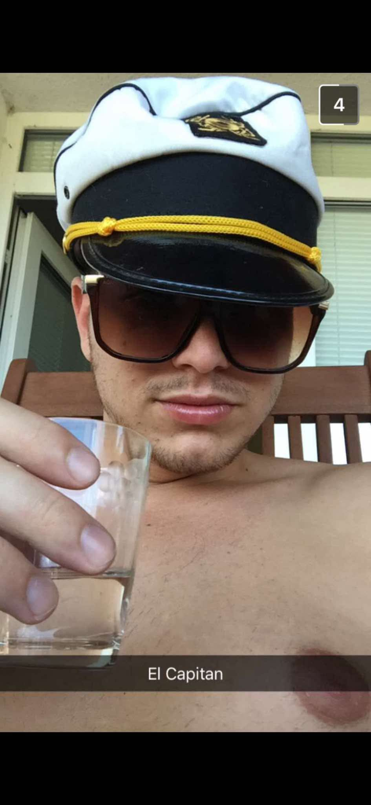

Térkép betöltése…
Napi áttekintés
| Nap | Dátum | Útvonal | Táv | Szállás |
|---|---|---|---|---|
| 1 | júl. 15. | Siófok → Balatonkeresztúr | Fazekas V. | |
| 2 | júl. 16. | Balatonkeresztúr → Badacsonytomaj | Casa Canem | |
| 3 | júl. 17. | Badacsonytomaj – pihenőnap ☀️ | 0 km | Casa Canem |
| 4 | júl. 18. | Badacsonytomaj → Balatonfűzfő | Ravenswood | |
| 5 | júl. 19. | Balatonfűzfő → Siófok 🏁 | Hazaút |
1. nap · 2026. július 15. (szerda)
~80 km
Siófok ▸ START
Délelőtti indulás, déli part
Balatonkeresztúr
Fazekas Vendégház · Kossuth Lajos u. 3.
Leghosszabb nap – végig a déli parton, kerékpáros úton. Siófok → Balatonföldvár → Balatonszemes → Balatonlelle → Balatonboglár → Fonyód → Balatonberény → Balatonkeresztúr. Ajánlott: 7–8 órakor indulni, hogy a délutáni meleg előtt végeztetek.
⛰ Magasságprofil (0 → 80 km)103–108 m · +75 m szint
Kerékpárszerviz az útvonalon
🔧 Siófok – start
🔧 Balatonlelle ~35 km
🔧 Fonyód ~55 km
🛞 Pumpa: Balatonboglár M7 pihenő
2. nap · 2026. július 16. (csütörtök)
~50 km
Balatonkeresztúr
Reggeli indulás
Badacsonytomaj
Casa Canem · Szőlőhegyi út 10.
Fenékpusztán át Keszthely (Festetics-kastély!), majd az északi borvidéken Gyenesdiáson és Vonyarcvashegyen át Badacsonytomajba. Rövidebb nap – van idő borteraszozni érkezés után.
⛰ Magasságprofil (0 → 50 km)103–165 m · +280 m szint
Kerékpárszerviz az útvonalon
🔧 Keszthely ~18 km
🛞 Gyenesdiás ~30 km
🔧 Badacsonytomaj – cél
3. nap · 2026. július 17. (péntek) – Pihenőnap
Badacsonytomaj
☀️
Pihenőnap – Casa Canem, Badacsonytomaj
Regenerálódás · Másnap ~75 km vár
🏔 Badacsony-hegy gyalogos túra (~3 km, 400 m szint – megéri, panoráma!) · 🍷 Borteraszok a Szőlőhegyi úton – Laposa, Szalay, Huba pincék · 🏖 Strand Badacsonyban · 🛶 Kajak/SUP bérlés.
4. nap · 2026. július 18. (szombat)
~75 km
Badacsonytomaj
Reggeli indulás, északi part
Balatonfűzfő
Ravenswood Cottage
Révfülöp, Balatonudvari, Aszófő, majd Tihany – kötelező +8 km kitérő, apátság, félsziget panoráma. Utána Balatonfüred (Tagore-sétány), Csopak, Balatonalmádi, Balatonfűzfő. A tó leglátványosabb szakasza.
⛰ Magasságprofil (0 → 75 km · Tihany-csúcs ~200 m)105–210 m · +620 m szint
Kerékpárszerviz az útvonalon
🔧 Révfülöp ~15 km
🔧 Balatonfüred ~50 km
🔧 Balatonalmádi ~65 km
🛞 Pumpa: Tihany komp kikötő
5. nap · 2026. július 19. (vasárnap) 🏁
~25 km
Balatonfűzfő
Utolsó reggel
Siófok 🎉 ▸ FINISH
Balatonkenese és Balatonakarattya érintésével
A legrövidebb nap szándékosan – frissen érjetek haza. Kör bezárva, ~230 km teljesítve! 🚴🎉
⛰ Magasságprofil (0 → 25 km)103–112 m · +55 m szint
Kerékpárszerviz az útvonalon
🔧 Balatonkenese ~12 km
🔧 Siófok – cél (full service)
Éttermek & bárok · Balatonkeresztúr este
🐟
🍽
🍷
🏖
🍺
🐠
Éttermek & bárok · Badacsonytomaj (2 este)
🍷
Laposa Birtok Borbár ⭐ Kötelező500 m
→ Badacsony olaszrizling, kéknyelű, sajtválogatás, tőkehúsos tányér
Google Mapsben →
🏔
Kisfaludy Ház ⭐ Legendás
→ Balatoni hal, vadételek, badacsonyi bortérkép, Rózsakő fehér
Google Mapsben →
🐟
Halászkert Badacsonytomaj 3 km
→ Fogassüllő, harcsapaprikás, balatoni halászlé, sült ponty
Google Mapsben →
🍾
Szalay Pince Borterasz 700 m
→ Szalay kéknyelű, rizling, helyi sajtok, grillezett snackek
Google Mapsben →
🍾
🍺
Éttermek & bárok · Balatonfűzfő / Almádi este
🍽
🍕
🐟
🍺
Strand Sörkert Balatonalmádi 8 km
→ Csapolt craft sörök, koktélok, lángos, grillételek
Google Mapsben →
🌟
Kistücsök Balatonfüred ⭐ Prémium20 km
→ Seasonal magyar fine dining, balatoni fogások, prémium borlap
Google Mapsben →
🚢
Tagore-sétány éttermek Balatonfüred 20 km
→ Több étterem egymás mellett: olasz, magyar, sushi, hamburger
Google Mapsben →
A csapat · 6 fő

Dávid

Béla

Szabi

Marci

Oli

Dominik
Várható időjárás · Júl. 15–19. · Balatoni átlagok